FUNCTION SPACES
This chapter is devoted to function spaces. That is, the elements of the spaces are functions on a fixed set X to a fixed topo-logical or uniform space Y. Almost all of the development concerns spaces of functions which are continuous relative to a topology for X. Briefly, the purpose of the study is to define topologies and uniformities for sets of continuous functions, and to prove compactness, completeness, and continuity properties for the resulting spaces.
Most of the results of the chapter have their origins in the early theory of real variables. However, the theorems on joint continuity and the compact open topology are relatively recent; they are due primarily to Fox [1]. Further information on function spaces may be found in Arens [2], Bourbaki [1], Myers [2], and Tukey [1].
POINTWISE CONVERGENCE
One topology for a function space has already been investigated rather extensively. If F is a family of functions, each on a set X to a topological space Y, then F is contained in the product 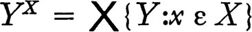. The topology 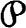 of pointwise convergence (coordinatewise convergence, simple convergence) or simply the pointwise topology for F is the relativized product topology. A net {fn, n ε D} converges to g iff {fn(x), n ε D} converges to g(x) for each x in X (see 3.4). A subbase for is the family of all subsets of the form {f: f(x) ε U}, where x is a point of X and U is open in Y. For each point x of X there is a function ex on F, which is called the evaluation at x (or the projection into the x-th coordinate space) which is defined by ex(f) − f(x) for all f in F. Evaluation at x is continuous and open relative to (theorem 3.2), and is the smallest topology for F such that each evaluation is continuous. A function j-on a topological space to F is continuous relative to iff ex ∘ g is continuous for each point x of X (theorem 3.3). It is clear that the pointwise topology depends only on the family of functions and the topology of Y. A topology for X, if such is given, does not enter into the definitions or the theorems. If Y is Hausdorff or regular, then the space F inherits the same property (3.5 and 4.A), but in general Y may be locally compact or satisfy the first or second axiom of countability and F may fail to have these properties (3.6 and 5.19).
A characterization of those function spaces which are compact relative to the topology is an immediate consequence of the Tychonoff theorem, 5.13, on the product of compact spaces. Before stating the result let us agree, for convenience, that a family F of functions on a set X to a topological space Y is pointwise closed iff F is a closed subset of the product space YX. If A is a subset of X, then F[A] is defined to be the set of all points f(x) for x in A and f in F If x ε X, then F[{x}] is abbreviated to F[x]. If ex is the evaluation at x, then clearly ex[F] = F[x].
1 THEOREM In order that a family F of functions on a set X to a topological space Y he compact relative to the topology of pointwise convergence it is sufficient that
(a)F be pointwise closed in YX, and
(b)for each point x of X the set F[x] has a compact closure.
If Y is a Hausdorff space the conditions (a) and (b) are also necessary.
PROOF The family F is not only a subfamily of YX but is also contained in 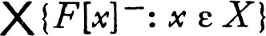. If condition (b) is satisfied, then this product is a compact subset of YX by the Tychonoff product theorem, and if F is pointwise closed, then F is compact. The sufficiency of (a) and (b) is then proved. If y is a Hausdorff space and F is compact relative to the pointwise topology, then F is closed by 5.7. The set F[x] is compact and closed because the evaluation at each point x is a continuous map of F into the Hausdorff space Y. ∎
The preceding theorem is more important than casual consideration of the topology of pointwise convergence might indicate. The pointwise topology is in many ways unnatural. For example, let Zbea set and for each finite subset A of X let CA be the characteristic function of A (that is, CA(x) = 1 if x ε A and CA(x) = 0 if 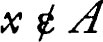). The family  of all finite subsets of X is directed by ⊃, and consequently 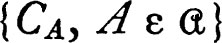 is a net of functions on X to the closed unit interval. This net converges to the function e which is identically one, because 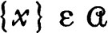 for each point x, and if A ⊃ {x}, then CA(x) = 1. Now a topology such that the characteristic function of a finite set is “near” the unit function is obviously unsuitable for many purposes. The more interesting topologies are those for which convergence is more restricted, that is, the larger topologies. But observe: if 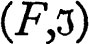 is compact and
of all finite subsets of X is directed by ⊃, and consequently 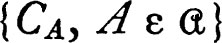 is a net of functions on X to the closed unit interval. This net converges to the function e which is identically one, because 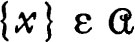 for each point x, and if A ⊃ {x}, then CA(x) = 1. Now a topology such that the characteristic function of a finite set is “near” the unit function is obviously unsuitable for many purposes. The more interesting topologies are those for which convergence is more restricted, that is, the larger topologies. But observe: if 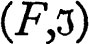 is compact and  is larger than the topology of pointwise convergence, then the identity map i of onto 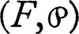 is continuous, and if is a Hausdorff space, then i must be a homeomorphism. Consequently if is compact, is Hausdorff, and
is larger than the topology of pointwise convergence, then the identity map i of onto 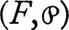 is continuous, and if is a Hausdorff space, then i must be a homeomorphism. Consequently if is compact, is Hausdorff, and  is larger than the pointwise topology, then
is larger than the pointwise topology, then  is identical with the topology of pointwise convergence. This simple remark indicates the standard method of proving a function space F compact relative to a topology
is identical with the topology of pointwise convergence. This simple remark indicates the standard method of proving a function space F compact relative to a topology  . One first shows that F is compact relative to the topology of pointwise convergence and then proves that -convergence of a net in F implies
. One first shows that F is compact relative to the topology of pointwise convergence and then proves that -convergence of a net in F implies  -convergence. If y is Hausdorff there can be no loss in restricting attention to these two propositions, for if either fails F is not compact relative to
-convergence. If y is Hausdorff there can be no loss in restricting attention to these two propositions, for if either fails F is not compact relative to  .
.
It is sometimes convenient to consider pointwise convergence for points in a subset of the domain space. Suppose F is a family of functions, each on a set X to a topological space Y, and suppose that A is a subset of X. There is a natural map R of F into the product space YA, obtained by mapping each member f of F into its restriction to A: that is, R(f) = f | A for each f in F. The smallest topology 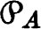 for F such that R is continuous evidently consists of the inverses under R of the open subsets YA. This topology is that of pointwise convergence on A. A subbase for is the family of sets of the form {f: f(x) ε U) for x in A and U open in Y, and a net {fn, n ε D} in F converges to g relative to iff {fn(x),n ε D} converges to g(x) for each x in A. The map R will be one to one iff, whenever f and g are distinct members of F, then for some point x of A it is true that f(x) ≠ g(x). A subset A of X for which this is the case is said to distinguish members of the family F.
2 THEOREM Let F be a family of functions, each on a set X to a Hausdorff space Y, and let A be a subset of X. The family F with the topology of pointwise convergence on A is a Hausdorff space if and only if A distinguishes members of F. If F is compact relative to the topology of pointwise convergence on X and if A dis-tinguishes members of F, then and are identical.
PROOF The product space YA is a Hausdorff space and, in view of the definition of , F with this topology will be Hausdorff iff the restriction map R is one to one. This is the case iff A distinguishes members of F. The identity map i of onto 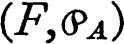 is always continuous since 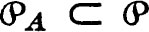. If is compact and is Hausdorff, then i is a homeomorphism and 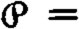 . ∎
If the range space is a uniform space, then the topology of pointwise convergence is the topology of a uniformity.
If F is a family of functions on a set X to a uniform space  , then F is a subset of the product 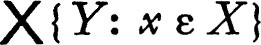 and the relativized product uniformity is called the uniformity of point-wise convergence (or of simple convergence). This is sometimes abbreviated as the uniformity. Its properties have already been studied (for example, 6.25).
, then F is a subset of the product 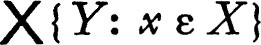 and the relativized product uniformity is called the uniformity of point-wise convergence (or of simple convergence). This is sometimes abbreviated as the uniformity. Its properties have already been studied (for example, 6.25).
If A is a subset of X, then the uniformity of pointwise convergence on A, or simply the uniformity, is defined to be the smallest uniformity which makes the restriction map R of F into the family of all functions on A to Y uniformly continuous. The following simple facts about this uniformity are listed without proof.
3 THEOREM Let F be a family of functions on a set X to a uniform space  and let A be a subset of X. Then the uniformity of pointwise convergence on A has the properties:
and let A be a subset of X. Then the uniformity of pointwise convergence on A has the properties:
(a)The family of all sets of the form {(f,g): (f(x),g(x)) ε V} for V in  and x in A is a subbase for the uniformity.
and x in A is a subbase for the uniformity.
(b)The topology of the uniformity is the topology of point-wise convergence on A.
(c)A net {fn, n ε D} is a Cauchy net if and only if {fn(x), n ε D} is a Cauchy net for each x in A.
(d)If  is complete and R[F] is closed in YA relative to pointwise convergence on A, then F is complete relative to the uniformity.
is complete and R[F] is closed in YA relative to pointwise convergence on A, then F is complete relative to the uniformity.
COMPACT OPEN TOPOLOGY AND JOINT CONTINUITY
Given a topology for a family F of functions on a topological space X to a topological space Y one might reasonably ask whether f(x) is continuous simultaneously in f and in x. Stated somewhat more formally, the question is: for which topologies for F is the map F × X which carries (f,x) onto f(x) continuous, if F × X is given the product topology? This section is devoted to a brief examination of this question. It turns out that there is a particular function space topology which is related to this problem, and we begin by defining this topology and establishing some elementary properties. The section is devoted entirely to topological questions; connections with a uniformity for function spaces will be established later. Throughout the section F will be a family of functions, each on a topological space X to a topological space Y.
For convenience, for each subset K of X and each subset U of Y, define W(K,U) to be the set of all members of F which carry K into U; that is, W(K,U) = {f: f[K] ⊂ U}. The family of all sets of the form W(K,U), for K a compact subset of X and U open in Y, is a subbase for the compact open topology for F. The family of finite intersections of sets of the form W{K,U) is then a base for the compact open topology; each member of this base is the form 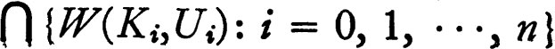,where each Ki is a compact subset of X and each Ui is an open subset of Y. The fact that each set consisting of a single point is compact makes comparison with the pointwise topology simple.
4 THEOREM The compact open topology  contains the topology of pointwise convergence. The space 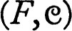 is a Hausdorff space if the range space Y is Hausdorff, and is regular if Y is regular and the members of F are continuous.
contains the topology of pointwise convergence. The space 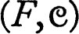 is a Hausdorff space if the range space Y is Hausdorff, and is regular if Y is regular and the members of F are continuous.
PROOF For each x in X and each open subset U of Y the set W({x}, U) = {f: f(x) ε U} belongs to  because {x} is compact. Hence 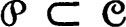, for the family of all sets of this form is a subbase for the pointwise topology . If y is a Hausdorff space, then is also a Hausdorff space, by 3.5, and if U and V are disjoint -neighborhoods of members of F they are also
because {x} is compact. Hence 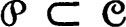, for the family of all sets of this form is a subbase for the pointwise topology . If y is a Hausdorff space, then is also a Hausdorff space, by 3.5, and if U and V are disjoint -neighborhoods of members of F they are also  -neighborhoods. Therefore is Hausdorff.
-neighborhoods. Therefore is Hausdorff.
Finally, assume that Y is regular; it must be shown that each neighborhood of each member f of F contains a closed neighborhood. It is sufficient to prove that each neighborhood of f which belongs to a subbase for  contains a closed neighborhood, for each neighborhood of f contains a finite intersection of neighborhoods belonging to the subbase. Suppose that f ε W(K,U) where K is compact and U is an open subset of Y. Then f[K] is compact, and since Y is regular there is by 5.10 a closed neighborhood V of f[K] such that V ⊂ U. Surely f ε W(K,V) ⊂ W(K,U) and evidently W(K,V) is a neighborhood of f. It remains to show that W(K,V) is closed. But W(K,V) is the intersection of the sets W({x},V) for x in K, and each of the sets W({x},V) is -closed and hence
contains a closed neighborhood, for each neighborhood of f contains a finite intersection of neighborhoods belonging to the subbase. Suppose that f ε W(K,U) where K is compact and U is an open subset of Y. Then f[K] is compact, and since Y is regular there is by 5.10 a closed neighborhood V of f[K] such that V ⊂ U. Surely f ε W(K,V) ⊂ W(K,U) and evidently W(K,V) is a neighborhood of f. It remains to show that W(K,V) is closed. But W(K,V) is the intersection of the sets W({x},V) for x in K, and each of the sets W({x},V) is -closed and hence  -closed. ∎
-closed. ∎
There is no hope of showing that, if Y is normal or satisfies the first or second axiom of countability, then has these properties, for if X is discrete the only compact sets are finite and hence  is identical with the topology of pointwise convergence. The product of normal spaces or spaces satisfying one of the countability axioms may fail to have the corresponding property and hence F with the topology
is identical with the topology of pointwise convergence. The product of normal spaces or spaces satisfying one of the countability axioms may fail to have the corresponding property and hence F with the topology  also may fail to have the property.
also may fail to have the property.
Let P be the map of F × X into Y which carries (f,x) into f(x). Each topology for F gives rise to a product topology for F × X, and one may ask whether P is continuous relative to this product topology. A topology for F is said to be jointly continuous iff the map P of F × X into Y is continuous. It is very easy to see that the topology of pointwise convergence is usually not jointly continuous. The discrete topology is jointly continuous, for if U is an open subset of Y, then 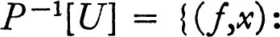 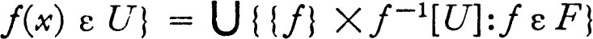, which is the union of open sets (assuming that F is a family of continuous functions). If a topology for F is jointly continuous, then each larger topology is also jointly continuous. Consequently the natural problem is to find the smallest jointly continuous topology, if such exists. It turns out that there is generally no such smallest topology; however, a slight relaxation of the conditions for joint continuity yields a precise description of the compact open topology. A topology for a family F of functions is jointly continuous on a set A iff the map P is continuous on F × A, where P(f,x) = f(x). (Caution: This does not mean that P is continuous at the points of F × A; the condition is that the restriction P | (F × A) be continuous.) A topology for F is jointly continuous on compacta iff it is jointly continuous on each compact subset of the domain space. Each member f of such a family is necessarily continuous on each compact set K (that is, f | K is continuous).
5 THEOREM Each topology which is jointly continuous on compacta is larger than the compact open topology  . If X is regular or Hausdorff and each member of F is continuous on every compact subset of Xy then
. If X is regular or Hausdorff and each member of F is continuous on every compact subset of Xy then  is jointly continuous on compacta,
is jointly continuous on compacta,
PROOF Suppose a topology  for F is jointly continuous on compacta, U is an open subset of Y, K is a compact subset of X, and P is the map such that P(f,x = f(x). It must be shown that W(K,U) is
for F is jointly continuous on compacta, U is an open subset of Y, K is a compact subset of X, and P is the map such that P(f,x = f(x). It must be shown that W(K,U) is  -open, where W(K,U) = {f: f[K] ⊂ U). The set V = (F × K) ∩ P−1[U] is open in F × K because
-open, where W(K,U) = {f: f[K] ⊂ U). The set V = (F × K) ∩ P−1[U] is open in F × K because  is jointly continuous on compacta. If f ε W(K,U), then {f} × K ⊂ V, and since {f} × K is compact there is a
is jointly continuous on compacta. If f ε W(K,U), then {f} × K ⊂ V, and since {f} × K is compact there is a  -neighborhood N of f such that N × K ⊂ p−1[U] by theorem 5.12. In other words, each member of the
-neighborhood N of f such that N × K ⊂ p−1[U] by theorem 5.12. In other words, each member of the  -neighborhood N of f is a member of the compact open neighborhood W(K,U). It follows that W(K,U) is
-neighborhood N of f is a member of the compact open neighborhood W(K,U). It follows that W(K,U) is  -open and the first statement of the theorem is proved. To prove the second assertion, suppose K is a compact subset of X, x ε K, U is open in Y, and (f,x) ε P−1[U]. Then, since f is continuous on K, there is a compact set M which is a neighborhood of x in K such that f [M] ⊂ U (recall that X is either Hausdorff or regular). Then W(M,U) × M is a neighborhood of (f,x) in F × K and is contained in P−1[U]. Joint continuity on K follows. ∎
-open and the first statement of the theorem is proved. To prove the second assertion, suppose K is a compact subset of X, x ε K, U is open in Y, and (f,x) ε P−1[U]. Then, since f is continuous on K, there is a compact set M which is a neighborhood of x in K such that f [M] ⊂ U (recall that X is either Hausdorff or regular). Then W(M,U) × M is a neighborhood of (f,x) in F × K and is contained in P−1[U]. Joint continuity on K follows. ∎
It may be noticed that, if X is locally compact, then a topology is jointly continuous on compacta iff it is jointly continuous. Hence, if X is a locally compact regular space, then the compact open topology for a family of continuous functions is the smallest jointly continuous topology.
If a topology  for a family F is jointly continuous on compacta, then 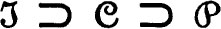, where ε is the compact open topology and is the pointwise. If is compact and the range space is Hausdorff, then is Hausdorff and consequently 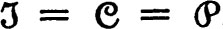. This fact shows the necessity of one of the conditions given for
for a family F is jointly continuous on compacta, then 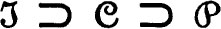, where ε is the compact open topology and is the pointwise. If is compact and the range space is Hausdorff, then is Hausdorff and consequently 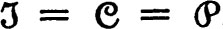. This fact shows the necessity of one of the conditions given for  -compactness in the next theorem. The result is given in a rather curious form in order to be directly applicable to the later problem.
-compactness in the next theorem. The result is given in a rather curious form in order to be directly applicable to the later problem.
6 THEOREM Let X be a topological space which is either regular or Hausdorffy let Y be a Hausdorff space, let C be the family of all unctions on X to Y which are continuous on each compact subset of X, and let  and be respectively the compact open and the point-wise topologies. Then a subfamily F of C is
and be respectively the compact open and the point-wise topologies. Then a subfamily F of C is  -compact if and only if
-compact if and only if
(a)F is  -closed in C,
-closed in C,
(b)F[x] has a compact closure for each member x of X, and
(c)the topology for the -closure of F in YX is jointly continuous on compacta.
PROOF Suppose F is  -compact. The space 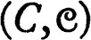 is Hausdorff because Y is Hausdorff and hence F is
-compact. The space 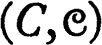 is Hausdorff because Y is Hausdorff and hence F is  -closed in C. Evaluation at a point x is -continuous, hence
-closed in C. Evaluation at a point x is -continuous, hence  -continuous, and the image F[x] of F is therefore compact. The topologies
-continuous, and the image F[x] of F is therefore compact. The topologies  and for F coincide because F is
and for F coincide because F is  -compact and -Hausdorff, hence F is -closed in YX, and by 7.5 the topology
-compact and -Hausdorff, hence F is -closed in YX, and by 7.5 the topology  (and hence ) for F is jointly continuous on compacta. This completes the proof that conditions (a), (b), and (c) are necessary.
(and hence ) for F is jointly continuous on compacta. This completes the proof that conditions (a), (b), and (c) are necessary.
Assuming conditions (a), (b), and (c), let F− be the -closure of F in YX. Condition (b) states that F[x]− is compact for each x, and since F− is a closed subset of the -compact set 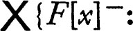 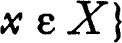 it follows that F− is -compact. By (c) the topology for F− is jointly continuous on compacta. Consequently each member of F− is continuous on each compactum and F− ⊂ C. Theorem 5.5 implies that the topology for F− is larger than  , and hence these two topologies for F− coincide. By (a) the family F is
, and hence these two topologies for F− coincide. By (a) the family F is  -closed in C and is hence
-closed in C and is hence  (and ) closed in the subset F− of C; in fact, F− = F, and F is
(and ) closed in the subset F− of C; in fact, F− = F, and F is  -compact. ∎
-compact. ∎
7 Notes The family C of all functions which are continuous on every compact subset coincides with the family of all continuous functions if the space is either locally compact or satisfies the first axiom of countability (see theorem 7.13 and the discussion preceding it). It is usually the family of all continuous functions which is of interest; however, the mathematical structure (and not my whim) is responsible for the appearance of the class C. The class also shows up a little later in a discussion of completeness.
The relation between the compact open topology and joint continuity was first studied by Fox [1], who showed that the compact open topology for a family of continuous functions is smaller than each jointly continuous topology and is itself jointly continuous if the domain space is locally compact. For proof of the fact that there is generally no smallest jointly continuous topology see Arens [2].
UNIFORM CONVERGENCE
This section is devoted to the study of a uniformity for a family F of functions on a set X to a uniform space  . The uniformity is independent of any topology which may be assigned to the set X, but one of the principal results is that the family of functions continuous relative to a topology for X is closed in the space of all functions on X to Y. That is, the uniform limit of continuous functions is continuous.
. The uniformity is independent of any topology which may be assigned to the set X, but one of the principal results is that the family of functions continuous relative to a topology for X is closed in the space of all functions on X to Y. That is, the uniform limit of continuous functions is continuous.
The uniformity of uniform convergence is the largest which will be considered and the uniformity of pointwise convergence is the smallest. Both of these may be considered as special instances of uniform convergence on the members of a family a of sets. This concept is investigated briefly; a uniformity is constructed for each family  of subsets of X, and the elementary properties are derived.
of subsets of X, and the elementary properties are derived.
Let F be a family of functions on a set X to a uniform space  . For each member V of
. For each member V of  let W(V) be the set * of all pairs (f,g) such that (f(x),g(x)) ε V for each x in X. Then W(V)[f] is the set of all g such that g(x) ε V[f(x)] for every x in X. It is easy to see that W(V−1) = (W(V))−1, W(U ∩ V) = W(U) ∩ W(V), and W(U ∘ V) ⊃ W(U) ∘ W(V) for all members U and V of
let W(V) be the set * of all pairs (f,g) such that (f(x),g(x)) ε V for each x in X. Then W(V)[f] is the set of all g such that g(x) ε V[f(x)] for every x in X. It is easy to see that W(V−1) = (W(V))−1, W(U ∩ V) = W(U) ∩ W(V), and W(U ∘ V) ⊃ W(U) ∘ W(V) for all members U and V of  . Consequently the family of all sets W(V) for V in
. Consequently the family of all sets W(V) for V in  is a base for a uniformity
is a base for a uniformity  for F by theorem 6.2. The family
for F by theorem 6.2. The family  is the uniformity of uniform convergence, or simply the u.c. uniformity. The topology of
is the uniformity of uniform convergence, or simply the u.c. uniformity. The topology of  is the topology of uniform convergence, or the u.c. topology.
is the topology of uniform convergence, or the u.c. topology.
It is clear that  is larger than the uniformity of pointwise convergence, for if y is an arbitrary member of X and
is larger than the uniformity of pointwise convergence, for if y is an arbitrary member of X and  , then {(f,g): (f(x),g(x)) ε V for all x in X} ⊂ {(f,g): (f(y),g(y)) ε V}, and hence each member of the defining base for
, then {(f,g): (f(x),g(x)) ε V for all x in X} ⊂ {(f,g): (f(y),g(y)) ε V}, and hence each member of the defining base for  is a subset of a member of the defining subbase for the pointwise uniformity. It follows that the u.c. topology is larger than the pointwise. It is also easy to see directly that uniform convergence implies pointwise convergence, for a net {fn, n ε D} in F converges to g relative to the u.c. topology iff the net is eventually in W(V)[g] for each V in
is a subset of a member of the defining subbase for the pointwise uniformity. It follows that the u.c. topology is larger than the pointwise. It is also easy to see directly that uniform convergence implies pointwise convergence, for a net {fn, n ε D} in F converges to g relative to the u.c. topology iff the net is eventually in W(V)[g] for each V in  , and this is true iff there is some m in D such that, when n ≧ m, then fn(x) ε V[g(x)] for all x in X. The following theorem lists other elementary properties of the uniformity
, and this is true iff there is some m in D such that, when n ≧ m, then fn(x) ε V[g(x)] for all x in X. The following theorem lists other elementary properties of the uniformity  .
.
8 THEOREM Let F be the family of all functions on a set X to a uniform space  and let
and let  be the uniformity of uniform convergence. Then:
be the uniformity of uniform convergence. Then:
(a)The uniformity  is generated by the family of all pseudo-metrics of the form d*(f, g) = sup {d(f(x), g(x)): x ε X}, where d is a bounded member of the gage of
is generated by the family of all pseudo-metrics of the form d*(f, g) = sup {d(f(x), g(x)): x ε X}, where d is a bounded member of the gage of  .
.
(b)A net {fn, n ε D} in F converges uniformly to g if and only if it is a Cauchy net relative to  and {fn(x), n ε D} converges to g(x) for each x in X.
and {fn(x), n ε D} converges to g(x) for each x in X.
(c)If  is complete so is the uniform space 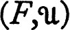.
is complete so is the uniform space 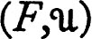.
PROOF To prove part (a) observe that the family of all sets of the form {(y,z): d(y,z) ≦ r}, for r positive and for d a bounded member of the gage of  , is a base for
, is a base for  . This is true because for each pseudo-metric e the pseudo-metric d = min [1, e] is bounded and has the same uniformity. But {(f,g): d*(f,g) ≦ r) = {(f,g): d(f(x),g(x)) ≦ r for each x in X} = W({(y,z): d(y, z) ≦ r}), where W is the correspondence used above in defining the u.c. uniformity. It follows that d* belongs to the gage of
. This is true because for each pseudo-metric e the pseudo-metric d = min [1, e] is bounded and has the same uniformity. But {(f,g): d*(f,g) ≦ r) = {(f,g): d(f(x),g(x)) ≦ r for each x in X} = W({(y,z): d(y, z) ≦ r}), where W is the correspondence used above in defining the u.c. uniformity. It follows that d* belongs to the gage of  and that pseudo-metrics of this form generate the gage.
and that pseudo-metrics of this form generate the gage.
One half of the proposition (b) is obvious, and it is only necessary to show that, if a Cauchy net {fn, n ε D} converges point-wise to g, then it converges uniformly to g. Let V be an arbitrary closed symmetric member of  , and choose m in D such that, if n ≧ m and p ≧ m, then fp(x) ε V[fn(x)] for each x in X. Such a choice is possible because the net is assumed to be Cauchy relative to
, and choose m in D such that, if n ≧ m and p ≧ m, then fp(x) ε V[fn(x)] for each x in X. Such a choice is possible because the net is assumed to be Cauchy relative to  . Since V[fn(x)] is closed and fp(x) converges to g(x) it follows that g(x) ε V[fn(x)} and hence fn(x) ε V[g(x)] for each n ≧ m and every x in X, and (b) is established. Proposition (c) is an immediate consequence of (b) and of the fact that the product of complete spaces is complete. ∎
. Since V[fn(x)] is closed and fp(x) converges to g(x) it follows that g(x) ε V[fn(x)} and hence fn(x) ε V[g(x)] for each n ≧ m and every x in X, and (b) is established. Proposition (c) is an immediate consequence of (b) and of the fact that the product of complete spaces is complete. ∎
The following theorem states the principal properties of  for a family of continuous functions.
for a family of continuous functions.
9 THEOREM Let F be the family of all continuous functions on a topological space X to a uniform space  , and let
, and let  be the uniformity of uniform convergence. Then:
be the uniformity of uniform convergence. Then:
(a)The family F is closed in the space of all functions on X to Y, and consequently is complete if  is complete.
is complete.
(b)The topology of uniform convergence is jointly continuous.
PROOF Proposition (a) is proved by showing that the set of non-continuous functions is an open subset of the space G of all functions on X to Y. If f is not continuous at a point x of X there is a member V of  such that f−1[V[f(x)]] is not a neighborhood of x. Choose a symmetric member W of
such that f−1[V[f(x)]] is not a neighborhood of x. Choose a symmetric member W of  such that W ∘ W ∘ W ⊂ V. It will be proved that if g is a function such that (g(y),f(y)) ε W for each y, then g−1[W[g(x)]] is not a neighborhood of x and hence g is not continuous. It will follow that G ~ F is open relative to the topology of uniform convergence. If (g(y),f(y)) ε W for each y, then g ⊂ W ∘ f and g−1 ⊂ f−1 ∘ W−1 = f−1 ∘ W and hence g−1 ∘ W ∘ f ⊂ f−1 ∘ W ∘ W ∘ W ∘ f ⊂ f−1 ∘ V ∘ f. Therefore g−1[W[g(x)]] is a subset of f−1 [V[f(x)]] and is not a neighborhood of x.
such that W ∘ W ∘ W ⊂ V. It will be proved that if g is a function such that (g(y),f(y)) ε W for each y, then g−1[W[g(x)]] is not a neighborhood of x and hence g is not continuous. It will follow that G ~ F is open relative to the topology of uniform convergence. If (g(y),f(y)) ε W for each y, then g ⊂ W ∘ f and g−1 ⊂ f−1 ∘ W−1 = f−1 ∘ W and hence g−1 ∘ W ∘ f ⊂ f−1 ∘ W ∘ W ∘ W ∘ f ⊂ f−1 ∘ V ∘ f. Therefore g−1[W[g(x)]] is a subset of f−1 [V[f(x)]] and is not a neighborhood of x.
The proof of (b) remains. To show continuity of the map of F × X into Y at a point (f,x) it is only necessary to verify that for V in  , if y ε f−1[V[f(x)}} and g(z) ε V[f(z)] for all z, then g(y) ε V(f(y)] ⊂ V ∘ V [f(x)]. ∎
, if y ε f−1[V[f(x)}} and g(z) ε V[f(z)] for all z, then g(y) ε V(f(y)] ⊂ V ∘ V [f(x)]. ∎
A number of useful uniformities are constructed by considering uniform convergence on each of a family  of subsets of the domain space. Explicitly, if F is a family of functions on a set X to a uniform space
of subsets of the domain space. Explicitly, if F is a family of functions on a set X to a uniform space  and
and  is a family of subsets of X, then the uniformity of uniform convergence on members of
is a family of subsets of X, then the uniformity of uniform convergence on members of  , abbreviated 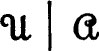, has for a subbase the family of all sets of the form {(f,g): (f(x),g(x)) ε V for all x in A}, for V in
, abbreviated 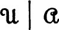, has for a subbase the family of all sets of the form {(f,g): (f(x),g(x)) ε V for all x in A}, for V in  and A in
and A in  . This uniformity may be described in another way. For each A in
. This uniformity may be described in another way. For each A in  let RA be the map which carries f into the restriction of f to A; that is, RA(f) = f|A. Then RA carries F into a family of functions on A to Y, this family may be assigned the uniformity of uniform convergence, and the uniformity may be described as the smallest which makes each RA uniformly continuous.
let RA be the map which carries f into the restriction of f to A; that is, RA(f) = f|A. Then RA carries F into a family of functions on A to Y, this family may be assigned the uniformity of uniform convergence, and the uniformity may be described as the smallest which makes each RA uniformly continuous.
The preceding propositions on uniform convergence imply corresponding results about the uniformity. The simple proofs are omitted.
10 THEOREM Let X be a topological space, let  be a uniform space, let
be a uniform space, let  be a family of subsets of X which covers X, let G be the family of all functions on X to Y, and let F be the family of all functions which are continuous on each member of
be a family of subsets of X which covers X, let G be the family of all functions on X to Y, and let F be the family of all functions which are continuous on each member of  . Then:
. Then:
(a)The uniformity of uniform convergence on members of  , is larger than the uniformity of pointwise convergence and smaller than that of uniform convergence on X.
, is larger than the uniformity of pointwise convergence and smaller than that of uniform convergence on X.
(b)A net {fn, n ε D} converges to g relative to the topology of if and only if it is a Cauchy net {relative to and converges to g pointwise,
(c)If  is complete, then G is complete relative to .
is complete, then G is complete relative to .
(d)The family F is closed in G relative to the topology of , and hence if  is complete so is 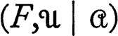.
is complete so is 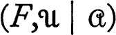.
(e)The topology of for F is jointly continuous on each member of  .
.
It should be emphasized that the family of continuous functions may fail to be complete relative to . If a is the family of all sets {x} for x in X, then is simply the uniformity of pointwise convergence, and the family of continuous functions is generally not complete relative to this uniformity. If  is such that continuity on each member of
is such that continuity on each member of  implies continuity on X, then proposition (d) above shows completeness of the family of continuous functions on X to a complete space. In particular, this is the case if there is a neighborhood of each point of X which belongs to
implies continuity on X, then proposition (d) above shows completeness of the family of continuous functions on X to a complete space. In particular, this is the case if there is a neighborhood of each point of X which belongs to  .
.
UNIFORM CONVERGENCE ON COMPACTA
In this section two distinct lines of investigation will be combined. Suppose that F is a family of continuous functions on a topological space X to a uniform space  . The uniformity of uniform convergence on compacta is the uniformity 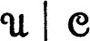, where 6 is the family of all compact subsets of X. The topology of is sometimes called the topology of compact convergence. It will be proved that this topology is identical with the compact open topology which is constructed from the topology of X and the topology of the uniformity
. The uniformity of uniform convergence on compacta is the uniformity 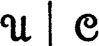, where 6 is the family of all compact subsets of X. The topology of is sometimes called the topology of compact convergence. It will be proved that this topology is identical with the compact open topology which is constructed from the topology of X and the topology of the uniformity  . Thus the uniformity depends on the uniformity
. Thus the uniformity depends on the uniformity  for Y, but the topology of depends only on the topology of
for Y, but the topology of depends only on the topology of  . The uniformity is particularly useful in case the space X has a “rich” supply of compact sets, and the section concludes with a brief examination of spaces satisfying a “richness” condition.
. The uniformity is particularly useful in case the space X has a “rich” supply of compact sets, and the section concludes with a brief examination of spaces satisfying a “richness” condition.
11 THEOREM Let F be a family of continuous functions on a topological space X to a uniform space  . Then the topology of uniform convergence on compacta is the compact open topology.
. Then the topology of uniform convergence on compacta is the compact open topology.
PROOF Let K be a compact subset of X, U an open subset of Y, let f ε F, and suppose that f[K] ⊂ U. Then f[K] is compact and by 6.33 there is V in  such that V[f[K]} ⊂ U. It is then clear that, if g is a function such that g(x) ε V[f(x)] for each x in K, then g[K] ⊂ U also. Consequently each set of the form [f: f[K] ⊂ U) is open relative to the topology of , and the compact open topology is therefore smaller than that of .
such that V[f[K]} ⊂ U. It is then clear that, if g is a function such that g(x) ε V[f(x)] for each x in K, then g[K] ⊂ U also. Consequently each set of the form [f: f[K] ⊂ U) is open relative to the topology of , and the compact open topology is therefore smaller than that of .
To prove the converse it must be shown that for each compact subset K of X, each V in  , and each continuous f there are compact subsets K1 … Kn of X and open subsets U1, … Un of Y such that f[Ki] ⊂ Ui, and if g[Ki] ⊂ Ui for each i then g(x) ε V[f(x)] for each x in K. Choose a closed symmetric member W of
, and each continuous f there are compact subsets K1 … Kn of X and open subsets U1, … Un of Y such that f[Ki] ⊂ Ui, and if g[Ki] ⊂ Ui for each i then g(x) ε V[f(x)] for each x in K. Choose a closed symmetric member W of  such that W ∘ W ∘ W ⊂ V, choose x1, … xn in K such that the sets W[f(xi)] cover f[K], let Ki = K ∩ ∩ f−1[W[f(xi)]], and let Ui be the interior of W ∘ W[f(xi)}. If g[Ki] ⊂ Ui for each i, then : for each x in K there is i such that x ε Ki, hence g(x) ε W ∘ W[f(xi)], and since f(x) ε W[f(xi)] it follows that (g(x), f(x)) ε W ∘ W ∘ W ⊂ V. ∎
such that W ∘ W ∘ W ⊂ V, choose x1, … xn in K such that the sets W[f(xi)] cover f[K], let Ki = K ∩ ∩ f−1[W[f(xi)]], and let Ui be the interior of W ∘ W[f(xi)}. If g[Ki] ⊂ Ui for each i, then : for each x in K there is i such that x ε Ki, hence g(x) ε W ∘ W[f(xi)], and since f(x) ε W[f(xi)] it follows that (g(x), f(x)) ε W ∘ W ∘ W ⊂ V. ∎
If the uniform space  is complete and
is complete and  is a family of subsets of the topological space X then the family of all functions on X to Y which are continuous on each member of
is a family of subsets of the topological space X then the family of all functions on X to Y which are continuous on each member of  is incomplete, according to 7.10. In order that the family of all continuous functions be complete it is then sufficient that
is incomplete, according to 7.10. In order that the family of all continuous functions be complete it is then sufficient that  satisfy the condition: a function is continuous whenever it is continuous on each member of
satisfy the condition: a function is continuous whenever it is continuous on each member of  . If f is a function on X to Y and B is a subset of Y, then this condition would be implied by: if A ∩ f−1[B] is closed for each member A of
. If f is a function on X to Y and B is a subset of Y, then this condition would be implied by: if A ∩ f−1[B] is closed for each member A of  , then f−1[B] is closed. In particular, the space of all continuous functions on X to Y is complete relative to uniform convergence on compacta if X satisfies the condition: if a subset A of X intersects each closed compact set in a closed set, then A is closed. Such a topological space is called a k-space. It is clear that the family
, then f−1[B] is closed. In particular, the space of all continuous functions on X to Y is complete relative to uniform convergence on compacta if X satisfies the condition: if a subset A of X intersects each closed compact set in a closed set, then A is closed. Such a topological space is called a k-space. It is clear that the family  of closed compact sets determines the topology of a k-space entirely, for A is closed iff 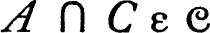 for each C in
of closed compact sets determines the topology of a k-space entirely, for A is closed iff 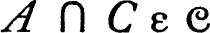 for each C in  . By complementation it follows that a subset U of a k-space is open iff U ∩ C is open in C for each closed compact set C.
. By complementation it follows that a subset U of a k-space is open iff U ∩ C is open in C for each closed compact set C.
The following is evident in view of the definition of k-space and the remarks preceding.
12 THEOREM The family of all continuous functions on a k-space to a complete uniform space is complete relative to uniform convergence on compacta.
The two most important examples of k-spaces are given in the following.
13 THEOREM If X is a Hausdorff space which is either locally compact or satisfies the first axiom of countability, then X is a k-space.
PROOF In each case the proof proceeds by assuming that B is a non-closed subset of X and showing that for some closed compact set C the intersection B ∩ C is not closed. Suppose x is an accumulation point of B which does not belong to B. If X is locally compact there is a compact neighborhood U of x and the intersection B ∩ U is not closed because x is an accumulation point but not a member. If X satisfies the first axiom of countability, then there is a sequence {yn, n ε w} in B ~ {x} which converges to x, and the set which is the union of {x} and the set of all points yn is clearly compact, but its intersection with B is not closed. ∎
COMPACTNESS AND EQUICONTINUITY
This is the first of two sections devoted to the problem of finding conditions for compactness of a family of functions relative to the compact open topology. The conclusion desired is topological, and the sharpest results are obtained from purely topological premises. However, the arguments are simpler for uniformities and the discussion of this section concerns maps into a uniform space. The last section of the chapter treats the purely topological problem.
Let F be a family of maps of a topological space X into a uniform space  . The family F is equicontinuous at a point x if and only if for each member V of
. The family F is equicontinuous at a point x if and only if for each member V of  there is a neighborhood U of x such that f [U] ⊂ V[f(x)] for every member f of F. Equivalently, F is equicontinuous at x iff 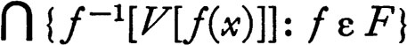 is a neighborhood of x for each V in
there is a neighborhood U of x such that f [U] ⊂ V[f(x)] for every member f of F. Equivalently, F is equicontinuous at x iff 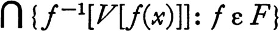 is a neighborhood of x for each V in  . Roughly speaking, F is equicontinuous at x iff there is a neighborhood of x whose image under every member of F is small.
. Roughly speaking, F is equicontinuous at x iff there is a neighborhood of x whose image under every member of F is small.
14 THEOREM If F is equicontinuous at x, then the closure of F relative to the topology of pointwise convergence is also equicontinuous at x.
PROOF If V is a closed member of the uniformity of Y, then the class of all functions f which satisfy the condition f [U] ⊂ V[f(x)] is evidently closed relative to the topology of pointwise convergence because it is identical with 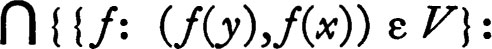 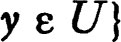. It follows that the pointwise closure of F is equicontinuous. ∎
A family F of functions is equicontinuous iff it is equicontinuous at every point. In view of the preceding theorem the closure of an equicontinuous family relative to the topology of pointwise convergence is also equicontinuous; in particular the members of the closure are continuous functions. The topology of pointwise convergence has other noteworthy properties for equicontinuous families.
15 THEOREM If F is an equicontinuous family, then the topology of pointwise convergence is jointly continuous and hence coincides with the topology of uniform convergence on compacta.
PROOF To prove that the map of F × X into Y is continuous at (f,x) let V be a member of the uniformity of Y and let U be a neighborhood of x such that g[U] ⊂ V[g(x)] for all g in F. If g is a member of the -neighborhood {h: h(x) ε V[f(x)]} of f and y ε U, then g(y) ε V[g(x)] and g(x) ε V[f(x)]. Consequently g(y) ε V ∘ V[f(x)], and joint continuity follows. Each jointly continuous topology is larger than the compact open by 7.5, and the compact open topology coincides with that of uniform convergence on compacta by 7.11. ∎
The preceding theorem implies that an equicontinuous family of functions is compact relative to the topology of uniform convergence on compacta if it is compact relative to the pointwise topology , and the Tychonoff product theorem gives sufficient conditions for -compactness. In this way equicontinuity together with certain other conditions implies compactness of a family of functions. An implication in the reverse direction, from compactness to equicontinuity, is shown in the following theorem.
16 THEOREM If a family F of functions on a topological space X to a uniform space  is compact relative to a jointly continuous topology, then F is equicontinuous.
is compact relative to a jointly continuous topology, then F is equicontinuous.
PROOF Suppose that x is a fixed point of X and V is a symmetric member of  . The theorem will follow if it is shown that there is a neighborhood U of x such that g[U] ⊂ V ∘ V[g(x)] for each g in F. Because the topology for F is jointly continuous there is for each member f of F a neighborhood G of f and a neighborhood W of x such that G × W maps into V[f(x)]. If g ε G and w ε W, then g(x) and g(w) both belong to V[f(x)] and hence g(w) ε V ∘ V[g(x)]. That is, g[W] ⊂ V ∘ V[g(x)] for each g in G. Because F is compact there is a finite family G1, …, Gn covering F and corresponding neighborhoods W1, …, Wn of x such that g[Wi] ⊂ V ∘ V[g(x)] for each g in Gi. If we let U be the intersection of the neighborhoods Wi of x, it is clear that g[U] ⊂ V ∘ V[g(x)] for every g in F. ∎
. The theorem will follow if it is shown that there is a neighborhood U of x such that g[U] ⊂ V ∘ V[g(x)] for each g in F. Because the topology for F is jointly continuous there is for each member f of F a neighborhood G of f and a neighborhood W of x such that G × W maps into V[f(x)]. If g ε G and w ε W, then g(x) and g(w) both belong to V[f(x)] and hence g(w) ε V ∘ V[g(x)]. That is, g[W] ⊂ V ∘ V[g(x)] for each g in G. Because F is compact there is a finite family G1, …, Gn covering F and corresponding neighborhoods W1, …, Wn of x such that g[Wi] ⊂ V ∘ V[g(x)] for each g in Gi. If we let U be the intersection of the neighborhoods Wi of x, it is clear that g[U] ⊂ V ∘ V[g(x)] for every g in F. ∎
The Ascoli theorem for locally compact spaces is an immediate consequence of the preceding results. It is obtained from 7.6 by replacing the condition “the pointwise topology for the -closure of F is jointly continuous on compacta” by “the family F is equicontinuous.” The latter condition implies the former (7.14 and 7.15) and compactness implies equicontinuity by 7.16. (A proof which does not depend on 7.6 is also simple to construct.)
17 ASCOLI THEOREM Let C be the family of all continuous functions on a regular locally compact topological space to a Hausdorff uniform space, and let C have the topology of uniform convergence on compacta. Then a subfamily F of C is compact if and only if
(a)F is closed in C,
(b)F[x] has a compact closure for each member x of X, and
(c)the family F is equicontinuous.
A form of the Ascoli theorem is true for families of functions on a k-space (a space such that a set is closed whenever its intersection with every closed compact set is closed). A variant of the notion of equicontinuity is required. A family F of functions is equicontinuous on a set A iff the family of all restrictions of members of F to A is an equicontinuous family. A family which is equicontinuous at every point of A is equicontinuous on A, but the converse proposition is false. However, a family which is equicontinuous on A is equicontinuous at each point of the interior of A.
The proof of the following theorem is omitted. It is a straightforward application of 7.6, the results of this section and the fact that a function on a k-space is continuous if it is continuous on each compact set.*
18 ASCOLI THEOREM Let C be the family of all continuous functions on a k-space X which is either Hausdorff or regular to a Hausdorff uniform space Y, and let C have the topology of uniform convergence on compacta. Then a subfamily F of C is compact if and only if
(a)F is closed in C,
(b)the closure of F[x] is compact for each x in X, and
(c)F is equicontinuous on every compact subset of X.
* EVEN CONTINUITY
This section is devoted to the proof of an Ascoli theorem for topological spaces. The pattern of attack is much the same as the foregoing except that a topological concept replaces the (uniform) concept of equicontinuity. The connections between the two concepts are discussed briefly at the end of the section.
Let F be a family of functions, each on a topological space X to a topological space Y. The concept of even continuity can be described intuitively by the statement: for each x in X, y in Y, and f in F, if f(x) is near y, then f maps points near x into points near y. Explicitly, the family F is evenly continuous iff for each x in X, each y in Y, and each neighborhood U of y there is a neighborhood V of x and a neighborhood W of y such that f [V] ⊂ U whenever f(x) ε W. The close connection between this definition and joint continuity may be emphasized by the restatement: F is evenly continuous iff for each x in X and y in Y and for each neighborhood U of y there are neighborhoods V of x and W of y such that {f: f ε F and f(x) ε W} × V is carried into U by the natural map. The crucial property of evenly continuous families is easily demonstrated.
19 THEOREM Let F be an evenly continuous family of functions on a topological space X to a regular space Y and let be the topology of pointwise convergence. Then the -closure F− of F is evenly continuous and is jointly continuous on F−.
PROOF The latter statement of the theorem is evident from the second formulation of the definition of even continuity, since {f: f ε F and f(x) ε W} is -open whenever W is open in Y. To show that the -closure of F is evenly continuous suppose x ε X, y ε Y and U is a neighborhood of y. Because Y is regular it may be supposed that U is closed. Let V be a neighborhood of x and W an open neighborhood of y such that, if f ε F and f(x) ε W, then f[V] ⊂ U, and suppose that {gn, n ε D} is a net in F which converges pointwise to g and g(x) ε W. Then {gn(x), n ε D} is eventually in W; hence for each z in V it is true that {gn(z), n ε D} is eventually in U and therefore g(z) ε U. This shows that g[V] ⊂ U. ∎
Sufficient conditions for compactness of an evenly continuous family of functions are more or less self-evident in view of the preceding result and 7.6. The following proposition shows the necessity of the conditions given in the Ascoli theorem.
20 THEOREM If a family F of continuous functions on a topological space X to a regular Hausdorff space Y is compact relative to a jointly continuous topology, then F is evenly continuous.
PROOF The identity map of the compact space F into F with the topology of pointwise convergence is continuous, and since the latter topology is Hausdorff, the two topologies coincide. The pointwise topology for F is therefore jointly continuous. Suppose that x ε X, y ε Y, and U is an open neighborhood of y. Let W be a closed neighborhood of y such that W ⊂ U, and observe that the set K of all members f of F such that f(x) ε W is pointwise closed and hence compact. If P is the function such that P(f,x) = f(x), then the compact set K × {x} is contained in P−1[U], and since P is continuous there is a neighborhood V of x such that K × V ⊂ P−1[U] by 5.12. That is, v ε V and f(x) ε W, then f(v) ε U. ∎
21 ASCOLI THEOREM Let C be the family of all continuous functions on a regular locally compact space X to a regular Hausdorff space Y, and let C have the compact open topology. Then a subset F of C is compact if and only if
(a)F is closed in C,
(b)the closure of F[x] is compact for each x in X, and
(c)F is evenly continuous.
PROOF If F is compact relative to the compact open topology conditions (a), (b), and (c) follow from 7.6 and 7.20. If F satisfies (a), (b), and (c), then the pointwise closure of Fis an evenly continuous family on which the pointwise topology is jointly continuous, by 7.19. Compactness follows from 7.6. ∎
The foregoing theorem can be extended to k-spaces in the same fashion that 7.17 was extended. A family F of functions is evenly continuous on a set A iff the family of all restrictions of members of F to A is evenly continuous. With this definition the Ascoli theorem (21) can be proved for k-spaces X if condition (c) is replaced by “F is evenly continuous on each compact subset of X.” The straightforward proof of this fact is omitted.
The section is concluded with two propositions which clarify the relation between even continuity and equicontinuity.
22 THEOREM An equicontinuous family of functions on a topological space to a uniform space is evenly continuous.
PROOF Suppose that F is an equicontinuous family of functions on X to Y, that x ε X and y ε Y, and that U is a neighborhood of y. Then one may assume that U is the sphere of d-radius r about y, where d is a pseudo-metric belonging to the gage of Y and r > 0. Since F is equicontinuous at x there is a neighborhood V of x such that, if z ε V, then d(f(x),(z)) < r/2 for all f in F. Consequently, if z ε V and f(x) belongs to the sphere of d-radius r/2 about y, then f(z) ε U. ∎
In a certain sense equicontinuity is the result of “uniformizing” even continuity with respect to the range space, and, as might be expected, equicontinuity may be deduced from even continuity in the presence of a suitable compactness condition.
23 THEOREM * If F is an evenly continuous family of functions on a topological space X to a uniform space Y, and x is a point of X such that F[x] has a compact closure, then F is equicontinuous at x.
PROOF Suppose d is a member of the gage of Y and r > 0. For each y in F[x]− there are neighborhoods W of y and V of x such that, if f(x) ε W, then f[V] is contained in the sphere of d-radius r/2 about y. Because F[x]− is compact, there is a finite number of neighborhoods Wi of points yi of F[x]− and corresponding neighborhoods Vi of x, for i = 1, …, n, such that the family of all Wi covers F[x]−, and such that, if f(x) ε Wi, then f[Vi] is a subset of the sphere of d-radius r/2 about yi, Consequently, if 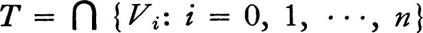 and f ε F, then f(x) belongs to Wi for some i, and since f [T] is a subset of some sphere of d-radius r/2, d(f(x),f(y)) < r for each y in T. Hence F is equicontinuous. ∎
Notes The results of this section are due to A. P. Morse and myself. Another form of the Ascoli theorem for topological spaces has been obtained by Gale [1].
AEXERCISE ON THE TOPOLOGY OF POINTWISE CONVERGENCE
The set of all continuous real-valued functions on a Tychonoff space X is dense, relative to the topology of pointwise convergence, in the set of all real-valued functions on X.
BEXERCISE ON CONVERGENCE OF FUNCTIONS
Let f be a continuous real-valued function on the closed unit interval [0,1] such that f(0) = f(1) = 0 and f is not identically zero. Let gn(x) = f(xn) for each non-negative integer n. Then {gn, n ε ω} converges pointwise (but not uniformly) to the function h which is identically zero. The union of {h} and the set of all gn is compact relative to the pointwise topology but is not compact relative to the topology of uniform convergence.
CPOINTWISE CONVERGENCE ON A DENSE SUBSET
Let F be an equicontinuous family of functions on a topological space X to a uniform space and let A be a dense subset of X. Then the uniformity of pointwise convergence on X is identical with the uniformity of pointwise convergence on A.
DTHE DIAGONAL PROCESS AND SEQUENTIAL COMPACTNESS
Prior to the proof of the Tychonoff product theorem the diagonal process, as outlined below, was the standard method of proving compactness of a family of functions. Recall that a topological space is called sequentially compact if each sequence in the space has a subsequence which converges to a point of the space.
(a) The product of a countable number of sequentially compact topological spaces is sequentially compact. (Suppose {Ym, m ε ω} is a sequence of sequentially compact spaces and {fn, n ε ω} is a sequence in the product 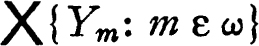. Choose an infinite subset A0 of ω such that {fn(0), n ε A0} converges to a point of Y0, and continue inductively, choosing an infinite subset Ak+1 of Ak such that [fn(k + 1), n ε Ak+1) converges to a point of Yk+1. If Nk is the k-th member of Ak, then {fn, k ε ω} is the required subsequence.)
(b) Let Y be a sequentially compact uniform space, let X be a separable topological space, and let F be an equicontinuous family of functions on X to Y which is closed in YX relative to the topology of point-wise convergence. Then F is sequentially compact relative to the pointwise topology (or the compact open topology). (Use 7.C and observe that each Cauchy sequence in Y has a limit point.)
Note Some very beautiful results on countable compactness of function spaces have been obtained recently by Grothendieck [1]. His results apply directly to some interesting linear topological space problems.
EDINI’S THEOREM
If a monotonically increasing net {fn, n ε D} of continuous real-valued functions on a topological space X converges pointwise to a continuous function f, then the net converges to f uniformly on compacta. (This is a straightforward compactness argument. If C is a compact subset of X let An = {(x,y): x ε C and fn(x) ≦ y ≦ f(x)} and observe that the intersection of the sets An for n in D is simply the graph of f | C.)
FCONTINUITY OF AN INDUCED MAP
Let X and Y be sets, let  and
and  be families of subsets of X and of Y respectively, let F be the family of all functions on X to a uniform space 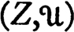, and let G be the family of all functions on Y to . If T is a map of X into Y the induced map T* of G into F is defined by T*(g) = g ∘ T for g in G. If for each member A of
be families of subsets of X and of Y respectively, let F be the family of all functions on X to a uniform space 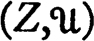, and let G be the family of all functions on Y to . If T is a map of X into Y the induced map T* of G into F is defined by T*(g) = g ∘ T for g in G. If for each member A of  the set T[A] is contained in some member of
the set T[A] is contained in some member of  , then T* is uniformly continuous relative to the uniformities for F and 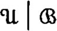 for G (uniform convergence on members of
, then T* is uniformly continuous relative to the uniformities for F and 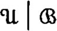 for G (uniform convergence on members of  and of
and of  respectively). In particular T* is always uniformly continuous relative to the uniformity of uniform convergence and is continuous relative to that of pointwise convergence if
respectively). In particular T* is always uniformly continuous relative to the uniformity of uniform convergence and is continuous relative to that of pointwise convergence if  covers y. If X and Y are topological spaces and T is continuous, then T* is uniformly continuous relative to uniform convergence on compacta.
covers y. If X and Y are topological spaces and T is continuous, then T* is uniformly continuous relative to uniform convergence on compacta.
Note The continuity of certain other naturally induced maps has been studied by Arens and Dugundji [2].
GUNIFORM EQUICONTINUITY
A family F of functions on a uniform space  to a uniform space
to a uniform space  is uniformly equicontinuous iff for each member V of
is uniformly equicontinuous iff for each member V of  there is U in
there is U in  such that (f(x),f(y) ε V whenever f ε F and (x,y) ε U.
such that (f(x),f(y) ε V whenever f ε F and (x,y) ε U.
(a) A family F is uniformly equicontinuous iff it is uniformly jointly continuous, in the sense that the natural map of F × X into Y is uniformly continuous when the uniformity of F is that of uniform convergence and F × X has the product uniformity.
(b) The pointwise closure of a uniformly equicontinuous family is uniformly equicontinuous.
(c) If X is compact and F is equicontinuous, then F is uniformly equicontinuous.
Note The proofs of the foregoing propositions require no new methods. A more detailed treatment of the subject is given in Arens [2] and in Bourbaki [1].
HEXERCISE ON THE UNIFORMITY
Let X be a set, let  be a cover of X which is directed by ⊃ (that is, for A and B in
be a cover of X which is directed by ⊃ (that is, for A and B in  there is C in
there is C in  such that C ⊃ A ∪ B), let
such that C ⊃ A ∪ B), let  be a uniform space, and let F be the family of functions on X to Y with the uniformity of uniform convergence on members of
be a uniform space, and let F be the family of functions on X to Y with the uniformity of uniform convergence on members of  . Finally, suppose that S is a net in F and that for each member A of
. Finally, suppose that S is a net in F and that for each member A of  there is given a subnet {S ∘ TA(m), m ε EA} of S which converges to a member s of F uniformly on A. Give an explicit formula for a subnet of S which converges to s relative to the topology of .
there is given a subnet {S ∘ TA(m), m ε EA} of S which converges to a member s of F uniformly on A. Give an explicit formula for a subnet of S which converges to s relative to the topology of .
ICONTINUITY OF EVALUATION
If F is a family of functions on a set X to a set Y, then X is mapped by evaluation into a family G of functions on F to Y; explicitly, the evaluation E(x) at a point x of X is defined by E(x)(f) = f(x) for all f in F. Let  and
and  be uniform spaces and let G have the uniformity of uniform convergence on members of a family
be uniform spaces and let G have the uniformity of uniform convergence on members of a family  of subsets of F. Then the evaluation map E of X into G is continuous if each member of
of subsets of F. Then the evaluation map E of X into G is continuous if each member of  is equicontinuous, and evaluation is uniformly continuous if each member of
is equicontinuous, and evaluation is uniformly continuous if each member of  is uniformly equicontinuous.
is uniformly equicontinuous.
JSUBSPACES, PRODUCTS, AND QUOTIENTS OF k-SPACES
(a) There are Tychonoff spaces which are not k-spaces, and since every Tychonoff space can be embedded in a compact Hausdorff space it follows that not every subspace of a k-space is a k-space. (See the example 2.E.)
(b) The product of uncountably many copies of the real line is not a k-space. (Let A be the subset of the product consisting of all members x such that for some non-negative integer n each coordinate of x is equal to n except for a set of at most n indices, and on this set x is zero. Then A is not closed, but A ∩ C is compact for each compact set C.)
(c) Let Zbea k-space, let R be an equivalence relation on X, and let X/R have the quotient topology. If X/R is a Hausdorff space, then it is a k-space.
KTHE k-EXTENSION OF A TOPOLOGY
Let  be a Hausdorff space. The k-extension of
be a Hausdorff space. The k-extension of  is defined to be the family 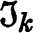 of all subsets U of X such that U ∩ C is open in C for every compact set C (equivalently, A is -closed iff A ∩ C is
is defined to be the family 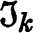 of all subsets U of X such that U ∩ C is open in C for every compact set C (equivalently, A is -closed iff A ∩ C is  -compact for every
-compact for every  -compact set C).
-compact set C).
(a) If C is a  -compact subset of X, then the relativization of
-compact subset of X, then the relativization of  to C is identical with that of . Consequently a set is
to C is identical with that of . Consequently a set is  -compact iff it is -compact.
-compact iff it is -compact.
(b) The space 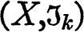 is a k-space.
(c) A function on X is -continuous iff it is  -continuous on every compact subset of X.
-continuous on every compact subset of X.
(d) The topology is the largest topology which agrees with  on compact sets (in the sense that the relativization to a compact set is identical with the relativization of
on compact sets (in the sense that the relativization to a compact set is identical with the relativization of  ).
).
LCHARACTERIZATION OF EVEN CONTINUITY
A family F of functions on a topological space X to a topological space Y is evenly continuous if and only if for each net {(fn,xn), n ε D} in F × X such that {xn, n ε D} converges to x and {fn(x), n ε D} converges to y it is true that {fn(xn), n ε D} converges to y.
MCONTINUOUS CONVERGENCE
Let F be a family of continuous functions, each on a space X to a space Y. A net {fn, n ε D} converges continuously to a member f of F iff it is true that {fn(xn), n ε D} converges to f(x) whenever {xn, n ε D} is a net in X converging to a point x.
(a) A topology  for F is jointly continuous iff a net in F converges continuously to a member f whenever it
for F is jointly continuous iff a net in F converges continuously to a member f whenever it  -converges to f.
-converges to f.
(b) If a sequence in F converges to f relative to the compact open topology, then it converges to f continuously.
(c) Suppose that X satisfies the first axiom of countability and that F, with the compact open topology  , also satisfies this axiom. Then 6 is jointly continuous and a sequence in F
, also satisfies this axiom. Then 6 is jointly continuous and a sequence in F  -converges to a member f iff it converges continuously to f.
-converges to a member f iff it converges continuously to f.
NTHE ADJOINT OF A NORMED LINEAR SPACE
Let X be a real normed linear space and let X*, its adjoint, be the space of all continuous real-valued linear functions on X. The norm topology for X* is defined by: ||f|| = sup {| f(x) |: || x || ≦ 1}. The topology of pointwise convergence for X* is called the w*-topology. A subset F of X* is called w*-bounded iff for each member x of X the set of all f(x) with f in F is bounded.
(a) The space X* is not complete relative to the w*-topology unless every linear function on X is continuous. (See 3.W. Assume that there are enough continuous linear functionals on X to distinguish points—this fact is a consequence of the Hahn-Banach theorem, Banach [1;27].)
(b) Theorem (Alaoglu) The unit sphere in X* is compact relative to the w*-topology. Hence each norm bounded w*-closed subset of X* is the; w*-compact. (The unit sphere is a closed subset of the product 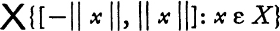.)
(c) The space X* with the w*-topology is paracompact and hence topologically complete. (See 5.Y and 6.L.)
(d) If a subset F of X* is equicontinuous, then its w*-closure is equicontinuous. If Fis equicontinuous, then the w*-closure of F is w*-compact. If the w*-closure of F is w*-compact, then F is w*-bounded. (Observe that F is equicontinuous iff it is norm bounded.)
(e) If X is non-meager, and in particular if X is complete, then each w*-bounded subset F of X* is equicontinuous. (Apply 6.U(b), or apply 6.U(a) to the set {x: | f(x) | ≦ 1 for each f in F}.)
(f) The hypothesis “X is non-meager” cannot be omitted from (e). (Consider the space X of all real sequences which are zero save on a finite set, with the norm || x || = ∑{| xn |: n ε ω}. If fn (x) = nxn, then the sequence {fn, n ε w} converges to zero relative to the w*- topology.)
Note The principal results of this problem are more or less classical and certain of them may clearly be extended to less restricted situations. However, the equivalences resulting from (d) and (e) do not hold for an arbitrary complete linear topological space. In connection with (f) it is interesting to note that a w*-compact convex subset of the adjoint of a normed linear space X is always equicontinuous; the proof of this fact is not entirely trivial.
OTIETZE EXTENSION THEOREM *
(a) Let X be a normal topological space, let A be a closed subset, and let f be a continuous function on A to the closed interval [−1,1]. Then f has a continuous extension g which carries X into [−1,1]. (Let C = {x: f(x) ≦ -⅓) and let D = {x: f(x) ≧ H}. By Urysohn’s lemma there is f1 on X to [−⅓,⅓] such that f1 is −⅓ on C and ⅓ on D. Evidently | f(x) − f1(x) | ≦ ⅔ for all x in A. The same sort of argument may be applied to the function f − f1.)
Note Dugundji [1], Dowker [3], and Hanner [1] have proved interesting extensions of Tietze’s theorem.
PDENSITY LEMMA FOR LINEAR SUBSPACES OF C(X)
Let X be a topological space, let C(X) be the space of all bounded continuous real-valued functions on X, and let C(X) have the topology of uniform convergence (equivalently, norm C(X) by ||f|| = sup {|f(x) |: x ε X}). A subset L of C(X) is said to have the two-set property iff for closed disjoint subsets A and B of X and for each closed interval [a,b] there is a member f of L such that f maps X into [a,b], f is a on A, and f is b on B. Each linear subspace of C(X) which has the two-set property is dense in C(X). (If g is an arbitrary member of C(X) and dist (g,L) > 0 choose h in L such that dist (g,L) is approximately || g − h ||. If k = g − h, then dist (k,L) = dist (g,L) which is approximately || k ||. Show that there is a member f of L such that || k − f || ≦ 2|| k ||/3.)
QTHE SQUARE ROOT LEMMA FOR BANACH ALGEBRAS *
A real (or complex) Banach algebra is an algebra A over the real (complex) numbers together with a norm such that A is a complete normed linear space and multiplication satisfies the condition: || xy || ≦ || x || || y ||. (In terms of the usual operator norm the algebra A can be described as a Banach space with an associative multiplication such that multiplication on the left by a fixed element x is a linear operator of norm at most || x ||.) Throughout the following, A is a fixed (real or complex) Banach algebra.
A function f on D to a normed linear space is absolutely summable iff ∑{||f(n)||: n ε D} exists.
(a) Each function in A which is absolutely summable is summable. If
{xn, n ε ω} and {ym, m ε ω] are absolutely summable, then
{xnym, (m,n) ε ω × ω} is absolutely summable, and
∑ {xn: n ε ω} ∑{ym: m ε ω} = ∑{xnym: (m,n) ε ω × ω}.
(The usefulness of this result lies in the fact that the last sum may be computed by grouping the summands in a more or less arbitrary fashion. See 6.S.)
(b) Let an be the n-th. binomial coefficient in the expansion of (1 − t)½ about t = 0. Then a0 = 1, an is negative for n positive, ∑{an: n ε ω( = 0, and ∑{anap−n: n ε ω and n ≦ p} is 1, −1 and 0 for p = 0, p = 1, and p > 1, respectively. (Alternatively, one may define the coefficients ön recursively so that the last stated relation is satisfied. After verifying that an < 0 for n positive observe that the partial sums ∑{antn: n < p) are monotonically decreasing in n and bounded below by (1 − t)½ for 0 ≦ t < 1—hence also for t = 1.)
(c) If the algebra has a unit u and if || x − u || ≦ 1, then there is an element y in the algebra such that x = y2. Explicitly, y may be taken to be ∑{an(u − x)n: n ε ω}, where an is defined as in (b). (Here it is assumed that x0 = u. The element y may also be written in the form: y = ∑ {an(u − x)n − u]: n ≧ 1|. In this form it is clear that y is the limit of polynomials in x and that these polynomials may be taken to be without constant coefficients.)
Note It is evident that a great deal more information can be obtained by means of the methods sketched above (for example, if || x || < 1, then ∑ {xn: n ε ω} is the multiplicative inverse of u − x). For a systematic treatment of Banach algebras see Loomis [2] and Hille [1].
RTHE STONE-WEIERSTRASS THEOREM
(a) Let X be a compact topological space, let C(X) be the algebra of all continuous real-valued functions on X, and let C(X) have the norm: || f || = sup {|f(x) |: x ε X}. Then a subalgebra R of C(X) is dense in C(X) if it has the two-point property: for distinct points x and y of X and for each pair a and b of real numbers there is f in R such that f(x) = a and f(y) = b.
In particular R is dense if the constant functions belong to R and R distinguishes points (in the sense that, if x ≠ y, then f (x) ≠ f (y) for some f in R).
The proof is accomplished by a sequence of lemmas.
(i) |
If f ε R, then | f | belongs to the closure R− of R, where | f |(x) = | f(x) |. (Take the square root of f2 using 7.P.) |
(ii) |
If f and g belong to a subalgebra, then max [f,g] and min [f,g] belong to its closure. (Here max [f,g](x) = max [f(x),g(x)]. Observe that max [a,b] = [(a + b) + |a − b |]/2 and min [a,b] = [(a + b) − |a − b |]/2.) |
(iii) |
If the subalgebra R has the two-point property, f ε C(X), x ε X, and e > 0, then there is g in R− such that g(x) = f(x) and g(y) < f(y) + e for all y in X. (Using compactness of X, take the minimum of a suitably chosen finite family of functions.) |
The theorem now follows from (iii) by taking the maximum of a properly chosen finite family of functions.
(b) If X is a topological space and the family C(X) of all continuous real-valued functions on X is given the topology of uniform convergence on compacta, then each subalgebra of C(X) which has the two-point property is dense in C(X).
Note This is unquestionably the most useful known result on C(X). The corresponding theorem for complex-valued functions is false (consider, for example, the functions which are continuous on the unit disk in the plane and are analytic in its interior). See M. H. Stone [5] for a more detailed discussion.
SSTRUCTURE OF C(X)
Throughout this problem X, Y, and Z will be compact Hausdorff spaces and C(X), C(Y), and C(Z) will be the algebras of all continuous real-valued functions on X, Y, and Z, respectively. A real homomorphism of an elgebra is a homomorphism into the real numbers.
(a) For each continuous function F on X to Y let F* be the induced map of C(Y) into C(X) defined by F*(h) = h ∘ F for all h in C(Y). Then
(i) |
F* is a homomorphism of C(Y) into C(X); |
(ii) |
F maps X onto Y iff F* is an isomorphism of C(Y) onto a sub-algebra of C(X) which contains the unit; |
(iii) |
F is one to one iff F* maps C(Y) onto C(X); |
(iv) |
if G is a continuous map of Y into Z, then (G ∘ F)* = F* ∘ G*; and |
(v) |
if F is a topological map of X onto Y, then (F−1)* = (F*)−1. |
(b) The topology of C(X) is entirely determined by the algebraic operations. In detail: f ≧ g iff f − g is the square of an element of C(X), and || f || = inf {k: −ku ≦ f ≦ ku} where u is the function which is identically one. If ϕ is a real homomorphism of C(X), then | ϕ(f) | ≦ || f || and, unless ϕ is identically zero, ϕ(u) = 1.
(c) Let S be the set of all real homomorphisms ϕ of C(X) such that ϕ(u) = 1, let S have the topology of pointwise convergence, and let E be the evaluation map of X into S (that is, E(x)(f) = f(*)). Then E is a topological map of X onto S. (Show that S is compact, use the Stone-Weierstrass theorem to show that the evaluation map D of C(X) into C(S) is an isomorphism of C(X) onto C(S), verify that E* = D−1, and use (a).)
(d) The space X is metrizable if and only if C(X) is separable. (This result is not needed for the rest of the problem; it is given simply as an exercise in the use of (c).)
(e) If H is a homomorphism of C(Y) into C(X) which carries the unit of C(Y) into the unit of C(X), then there is a unique continuous map F of X into Y such that H = F*. (The homomorphism H induces a map of the real homomorphisms on C(X) into real homomorphisms on C(Y).)
(f) Let R be a closed subalgebra of C(X) such that u ε R, let F be the map of X into 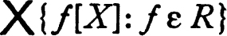 which is defined by F(x)f = f(x), and let Y be the range of F. Then R is the range of the induced isomorphism F* of C(Y) into C(X).
(g) Let I be a closed ideal in C(X) and let Z = {x: f(x) = 0 for all f in I}. Then I is the set of all members of C(X) which vanish identically on Z. (If Z is empty, then there is a member I which vanishes at no point and therefore has an inverse. Consider the subalgebra C + I, where C is the set of constant functions. Because Z is non-void the set C + I is closed, and (0 may be applied.)
Notes Quite a bit is known about the structure of C(X). Further information and references are given in a review of the subject by S. B. Myers [1]. See also Hewitt [2].
The line of attack outlined in the preceding problem is not the only one possible—the fundamental facts (the Stone-Weierstrass theorem, the Tychonoff product theorem, and the Tietze theorem) may be used in various ways to yield the desired results. However, the pattern used above is, in part, an example of a general method. To each member of a certain collection of objects (in this case compact Hausdorff spaces X) there is associated another object (in this case the Banach algebras C(X)). Moreover, to each of a specified class of maps of the original objects (continuous maps in the case at hand) there is assigned an induced map satisfying certain conditions (for example (iv) and (v) of (a)). In this case the induced maps “go in the direction opposite” that of the inducing maps—such a correspondence is called contra-variant. The assignment of the Stone-Čech compactification of a Tychonoff space, together with the obvious induced maps, furnishes an example where the induced map is in the same direction as the original—a covariant correspondence.
This general method of investigation has been used most successfully by Eilenberg and Steenrod in their axiomatic treatment of homology theory [1]. The method itself was first studied by Eilenberg and Mac-Lane. The study of objects and maps might be called the galactic theory, continuing the analogy whereby the study of a topological space is called global.
TCOMPACTIFICATION OF GROUPS; ALMOST PERIODIC FUNCTIONS
It is natural to attempt to map a topological group into a dense subgroup of a compact topological group in somewhat the same way that a Tychonoff space is embedded in its Stone-Čech compactification. A topological embedding is usually impossible—a complete group is closed in each Hausdorff group in which it is topologically and isomor-phically embedded. However, a number of interesting results can be obtained; the propositions that follow are intended to be an introduction to these. The development is motivated by the observation: If ϕ is a continuous homomorphism of a topological group G into a compact group H and if g is a continuous real-valued function on H, then g ∘ ϕ has the property that the set of all left translates is totally bounded (relative to the uniformity of uniform convergence).
Throughout it is assumed that G is a fixed topological group. For each bounded real-valued function f on the group G and each x in G the left translate of f by x, Lx(f), is defined by: Lx(f)(y) = f(x−1y). The space of bounded real functions is metrized by d(f,g) = sup {| f(x) − g(x) |: x ε X} and the left orbit Xf of a function f is defined to be the closure, relative to the metric topology, of the set of all left translates of f. A function f is called left almost periodic iff Xf is compact.
Let A be the set of all continuous left almost periodic functions on G. Then for each x in G the left translation Lx maps A into A. Topologize the space of all maps of A into A by pointwise convergence, and let α[G] be the closure relative to this topology of the set of left translations.
(a) Lemma Let (X,d) be a compact metric space and let K be the group (under composition) of all isometries of K into itself. Then the topology (for K) of uniform convergence on X is the topology of the metric: d*(R,S) = sup {d(R(x),S(x)): x ε X} and this is identical with the topology of pointwise convergence on X. The group K with this topology is a compact topological group.
(b) α[G] is compact. (Observe that 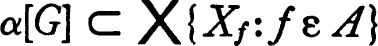.)
(c) Each member of α[G] is an isometry which carries each left orbit Xf onto itself. The natural map of α[G] into the product space 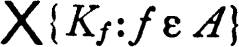, where Kf is the group of isometries of Xf, is a topological isomorphism. Hence α[G] is a topological group.
(d) If A is given the topology of pointwise convergence on G and α[G] (a subset of AA) has the resulting product topology, then the two topologies for α[G] coincide. Hence Rn → R in α[G] iff Rn(f)(x) → R(f) (x) for all f in A and all x in G.
(e) The map L of G into α[G] which carries a member x of G into Lx is a continuous homomorphism. The smallest topology for G which makes L continuous is identical with the smallest topology which makes each member f of A continuous. (α[G] may also be described as the completion, relative to the smallest uniformity which makes each f in A uniformly continuous, of G modulo the subgroup of members of G which are not distinguished from the identity by members of A.)
(f) If g is a continuous real function on α[G], then g ∘ L ε A. If f ε A and g is the function on α[G] defined by g(R) = R−1 (f) (e), then f = g ∘ L and g is continuous. The family of continuous real functions on α[G] is isometric (and isomorphic) to A.
(g) If ϕ is a continuous homomorphism of G into a compact topological group H, then there is a continuous homomorphism θ of α[G] into H such that ϕ = θ ∘ L. (More generally, for H arbitrary ϕ induces a natural homomorphism θ of α[G] into α[H] such that θ ∘ L = L ∘ ϕ. See the definition of α.)
There are several obvious corollaries to the preceding development; for example, a function is left periodic iff it is right periodic, and the class A is a Banach algebra which is isomorphic to the algebra of all continuous functions on the compact group α[G].
(h) The term “almost periodic” is derived from an alternate description of the class A. A member x of G is called a left e-period of a real function f iff |f(x−1y) − f(y) | < e for all y in G. Let Ae be the set of all left e-periods of a continuous function f. Then the following are equivalent:
(i) |
There is a homomorphism ϕ of G into a compact group H and a continuous real-valued function h on H such that g = h ∘ ϕ. |
(ii) |
The set of left translates of f is totally bounded relative to the uniformity of uniform convergence. |
(iii) |
For each positive number e there is a finite subset B of G such that G = BAe. |
(The connection between (ii) and (iii) is clarified by observing that | Lx(f)(z) − Ly(f)(z) | < e for all z iff y−1x is a left e-period.)
Notes The results above are due primarily to Weil [2]. The equivalence of parts (ii) and (iii) of (h) is a classical theorem of Bochner. Loomis [2] investigates almost periodic functions by showing first that the set of all left almost periodic functions on a group satisfies the conditions which characterize a Banach algebra of functions, and then defining α[G] to be the set of real homomorphisms of this Banach algebra.
Proposition (a) suggests the general problem of topologizing a homeo-morphism group in such a fashion as to obtain a topological group. For results in this direction and for references see Arens [3] and Dieudonné [4].
* The set W(V) may be described very simply in terms of the usual notation for relations: W{V) = {(f,g): g ∘ f−1 ⊂ V}. This statement is clear since g ∘ f−1 is precisely the set of all pairs (f(x),g(x)) with x in X. It is also clear that W(V) = ((f,g): g ⊂ V ∘ f} and W(V)[f] = {g: g ⊂ V ∘ f] = {g: g(x) ε V[f(x)] for each x in X}.
* It is evident that the condition “X is a k-space” may be omitted from the hypothesis of the theorem if the family C of continuous functions is replaced by the family of all functions which are continuous on each compact set. However, the same result may be obtained by applying the given theorem to X with the topology  such that a set A is
such that a set A is  -closed iff A ∩ B is closed for every closed compact set B.
-closed iff A ∩ B is closed for every closed compact set B.
* This theorem is false if the condition “F[x] has a compact closure” is replaced by “F[x] is totally bounded”.
* This theorem occurs here because the proof requires the fact that the uniform limit of continuous functions is continuous. In all honesty I should admit that there are three problems in earlier chapters where the same fact is used.
* This proposition is given here essentially as a preliminary to the Stone-Weierstrass theorem. However, the lemma is of some importance in a more general situation and is consequently stated for an arbitrary Banach algebra.